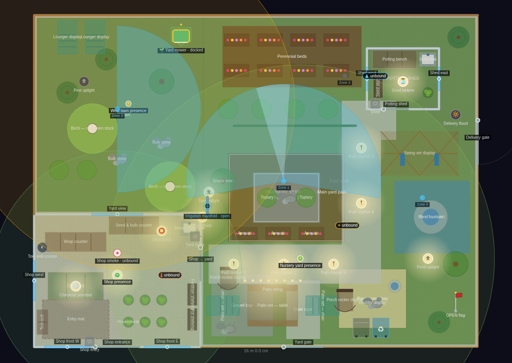
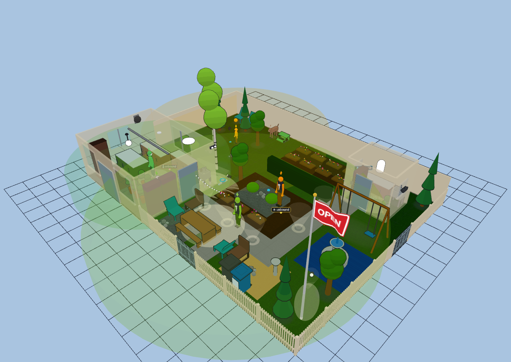
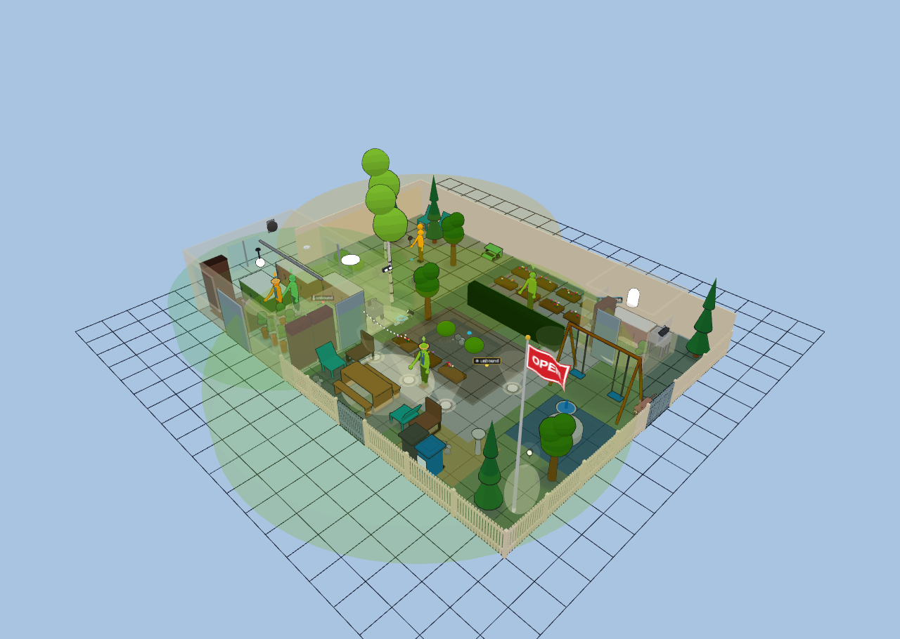

Lawn & Garden Center — The Potting Shed
Explore it live above, or import the JSON in Diorama under Settings ▸ Data ▸ Configurations ▸ Import.
~310 sq ft shop + ~14,900 sq ft fenced lot · 1 floor · 3 rooms — yard & terrain showcase
A neighbourhood lawn-and-garden centre on a 16 × 12 m corner lot: a compact indoor
shop in the south-west corner and a big fenced nursery yard wrapping around it.
This plan exists to exercise the whole outdoor/terrain arc at once — ground
coverings, terraces, path ribbons, fences, gates, hedges, sprinklers, a flagpole
and the full outdoor furniture family — rather than to model a home.
Boundary: white picket along the street frontage (south and east), solid privacy
board along the two back lot lines, a customer gate off the street and a delivery
gate on the east side. A clipped hedge run divides the shrub display from the
nursery beds without closing the yard off.
Ground: grass over the whole lot, a gravel bulk bay and a paver-sand bay along the
frontage, a mulched perennial bed behind the hedge, and a water display pond with
a fountain in it. A two-tier terraced display bed sits mid-yard — a mulch podium
raised 200 mm with a rock-capped tier raised 450 mm nested inside it, planted with
annual flower beds and topiary bushes. Two concrete path ribbons (authored as
centerlines and buffered into polygons) run from the shop door out to the potting
shed and from the customer gate up into the yard.
Garden Shop: checkout island on an entry mat, wrap counter, seed & bulb counter,
a tool-wall cabinet, two shelving runs for pots and fertiliser, a potting sink
and two rows of houseplants under a picture-window frontage.
Nursery Yard: patio-furniture display (picnic table flanked by two lawn chairs),
boulder and bulk-stone displays, bird bath, shade and pine trees, a shrub row,
eight perennial flower beds in two rows, a swing-set display, and curbside bins.
Three sprinkler zones (a 200° rotor over the nursery beds plus two spray heads)
and a robot-mower dock keep it maintained; an OPEN flag flies at the frontage.
Potting Shed: a free-standing 2.6 × 2.2 m shed with a potting bench, a shed sink,
seed shelving and a plant, lit by a mason-jar lantern.
Lighting leans on the ground light kinds: five flush in-ground path markers along
the main ribbon, three aimable ground spots uplighting the shade tree, the pond
and a pine, a string-light wash over the patio display, and two floodlights on
the shop and delivery gate. Three unbound demo AI-avatar presence sensors (shop,
nursery yard, west lawn) keep customers and staff moving with no Home Assistant
attached.
Retail additions: two balled-and-burlapped birch specimens in the bulk yard, a pair
of porch rockers in the patio-furniture display, a fourth (drip) sprinkler zone on
the potted stock, and an irrigation manifold valve at the shop yard corner.
Garden Centre
3 rooms · 192 m² footprint


Glass-house overview
